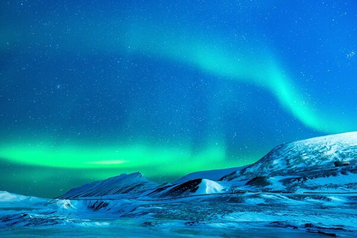

Zorza polarna (Aurora borealis, aurora australis) – zjawisko świetlne
obserwowane w górnej atmosferze w pobliżu biegunów magnetycznych planety, które ma
silne pole magnetyczne o charakterze dipolowym (dwubiegunowym).Na Ziemi zorze występują
na wysokich szerokościach geograficznych, głównie za kołami podbiegunowymi, chociaż w
sprzyjających warunkach bywają widoczne nawet w okolicach 50. równoleżnika. Zdarza się,
że zorze polarne obserwowane są nawet w krajach śródziemnomorskich. Na półkuli północnej
zorza jest określana łacińską nazwą Aurora borealis, a południowa zorza polarna nosi nazwę
Aurora australis.
